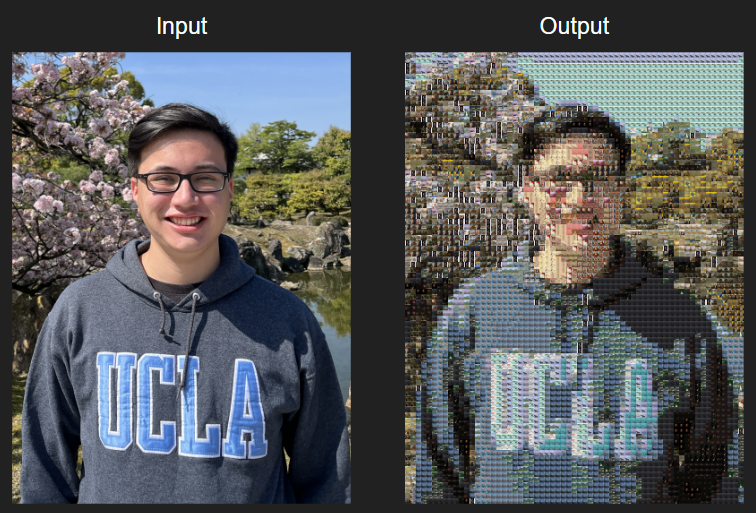

What is a photomosaic?
A "photomosaic" is a large, detailed picture that is made up of many smaller photos. From afar, the picture appears as a blurry rendering of some image, but as we zoom in, we can see that individual photos are acting like "tiles" that comprise the bigger picture.

This project aims to implement this idea, where the "tiles" are created from famous paintings, and the "bigger picture" is - you! More specifically, your webcam, or whatever camera is attached to the device you are using. (And if you don't have a camera, or you disabled it, then uhh, yeah it should be obvious why this isn't working lol)
We can take this one step further. After all, a video is just a sequence of frames being played in rapid succession, and each individual frame is just a still image! By periodically taking snapshots from the input camera, running them through the photomosaic algorithm, and replaying them back at a similar frequency, we can essentially create a video made of photomosaics! Let's call it a "videomosaic", I think that sounds pretty cool.
About the project
Videomosaic was created as a final group project for Math 155: Mathematical Imaging at UCLA, under the instruction of Sarah Tymochko. Above is the recorded presentation associated with this project. During an initial stage of brainstorming, the group landed on two ideas: an algorithm that would take in an input image and construct a photomosaic based on an image library, and a filter that would make a photograph appear in the style of oil or watercolor painting. As a compromise, the group settled on creating an algorithm that would construct photomosaics based on famous paintings from all around the world.
Initially, the goal was to compile a painting library and create an algorithm in Python that would construct photomosaics from it. We were successful in doing so, and thus decided to expand the possibilities of this project. The concept of applying this algorithm to create video equivalents combined with the flair of a live, client-side demo meant that this project was ideal for a web app.
This is the final product of that vision. The photomosaic and videomosaic algorithms, as well as the painting image library are all processed and performed client-side, in the browser through javascript, hosted by GitHub.
Credits
Group Members
Anna Wang
Morgan Chan
You Wu
Michael Sherbrooke
Presentation video and website by Michael Sherbrooke
We'd also like to thank Prof. Tymochko for her wonderful abilities as an instructor!
References
There's a lot, and in no particular order, but here's a list of relevant links we used. This project is for nonprofit, educational purposes.
Di Blasi, Gianpiero, Giovanni Gallo, and Maria P. Petralia. "Smart Ideas for Photomosaic Rendering." Eurographics Italian Chapter Conference. Vol. 2006. 2006.
Milgram, David L. "Computer methods for creating photomosaics." IEEE Transactions on Computers 100.11 (1975): 1113-1119.
Pandey, Achala, and Umesh C. Pati. "Image mosaicing: A deeper insight." Image and Vision Computing 89 (2019): 236-257.
Saravanan, G., G. Yamuna, and S. Nandhini. "Real time implementation of RGB to HSV/HSI/HSL and its reverse color space models." 2016 International Conference on Communication and Signal Processing (ICCSP). IEEE, 2016.
Seo, Sanghyun, and Dongwann Kang. "A photomosaic image generation method using photo annotation in a social network environment." Multimedia Tools and Applications 75 (2016): 12831-12841.
Photo links:
https://i.pinimg.com/originals/94/2f/2d/942f2d9c7c46fd294c17d623ee0c5237.jpg
https://picturemosaics.com/photomosaics/gallery/obama/share.jpg
https://picturemosaics.com/photomosaics/gallery/nokia/share.jpg
https://sea.mashable.com/tech/21424/that-instagram-selfie-you-posted-is-an-open-invitation-to-surveillance
https://www.adorama.com/alc/how-virtual-reality-works/
https://media.istockphoto.com/id/1223272089/vector/film-reel-and-film-strip-isolated-on-blue-background-realistic-cinema-background-with-place.jpg?s=170667a&w=0&k=20&c=0I3oxdheO3nM47pVCwRWY9aLSw6IcVKMTU8UEusenp8=